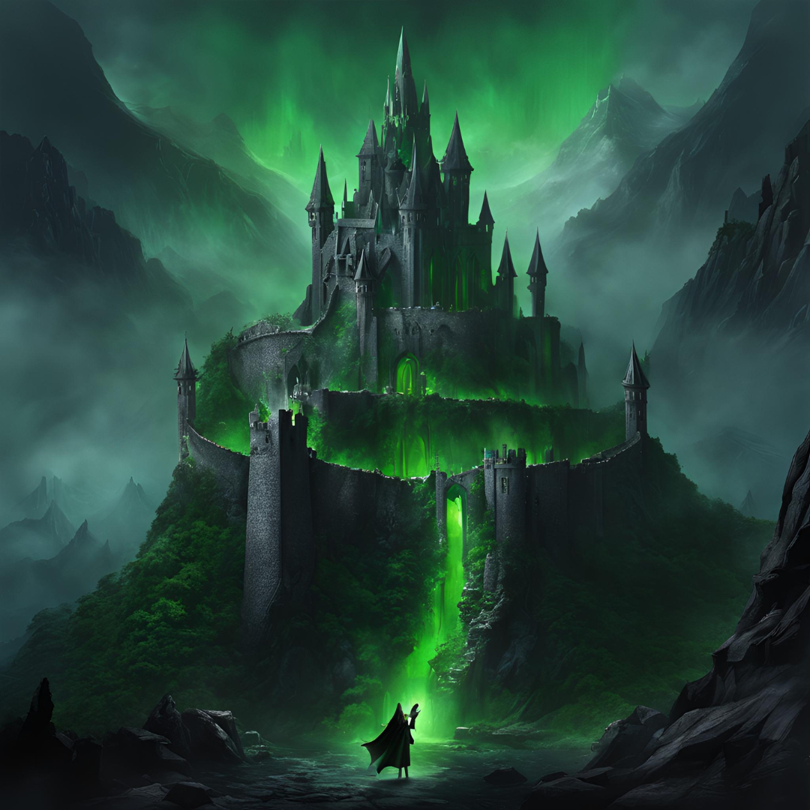

The Witch-king of Angmar
Once a mortal king, the Witch-king of Angmar accepted one of Sauron’s Nine Rings of Power, succumbing over time to its dark influence. With his mortal identity erased and his will bound to Sauron’s, he became the leader of the Nazgûl. Known for his cruelty and strength, he was given dominion over the land of Angmar in the north, a kingdom he ruled with fear and dark magic, seeking to weaken and ultimately destroy the northern kingdom of Arnor.
Master of Angmar and Harbinger of Destruction
From his fortress of Carn Dûm, the Witch-king led countless attacks on Arnor, spreading terror and chaos in an attempt to fracture the Free Peoples. His relentless assault on the North became legendary and almost led to the complete annihilation of Arnor. Though his kingdom eventually fell, his reign solidified his reputation as the most feared of the Ringwraiths and Sauron’s most loyal servant.
Unmatched Power and Abilities
As the Lord of the Nazgûl, the Witch-king possessed unique powers that set him apart from the others. He wielded a cursed weapon, the Morgul blade, capable of inflicting a dark poison that could turn his victims into wraiths. His ability to inspire fear, even without being seen, was unparalleled, and he was immune to ordinary weapons. According to prophecy, no "man" could kill him, a detail that would shape his fate during the War of the Ring.

Key Moments: The Siege of Minas Tirith
During the War of the Ring, the Witch-king led Sauron’s armies in a siege against the city of Minas Tirith, the capital of Gondor. His dark sorcery and battle prowess were on full display as he broke through the gates of the city, striking fear into the hearts of Gondor’s defenders. However, his prophesied doom came when he faced Éowyn of Rohan and Merry the hobbit, who together fulfilled the prophecy, bringing about his fall on the Pelennor Fields.
Symbol of Fear and Sauron’s Authority
As the leader of the Nine, the Witch-king embodied Sauron’s authority and the power of the Rings. His story serves as a grim reminder of the corruption that follows the pursuit of unchecked power, as he became a wraith with no will of his own, existing only to carry out Sauron’s commands. His legacy of terror influenced Middle-earth’s history for centuries, leaving a mark on all who heard of his name.
The Tragic Fate of a Lost King
The Witch-king’s journey from a mortal ruler to a wraith bound in servitude is one of Middle-earth’s most tragic tales. His complete loss of identity, purpose, and freedom under Sauron’s control highlights the peril of ambitions without morality. The Witch-king’s fate serves as both a cautionary tale and a dark legend, forever enshrined as the most feared and destructive of the Nine.
The Lord of the Nazgûl in Darkness and Power
The Witch-king, as the leader of the Nazgûl, was the most powerful and terrifying of Sauron's servants. His dark power and mastery over fear were unmatched, and he was the embodiment of Sauron’s will in the world. His story exemplifies the tragic consequences of power unchecked by morality, as his reign left a legacy of darkness across Middle-earth.
